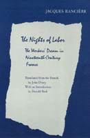

<body bgcolor="#FFFFFF" text="#000000" link="#0000FF" vlink="#CC0000" alink="#CC0000"><center><hr width="350" size="1" align="center" noshade>First English translation dramatically reinterprets the Revolution of 1830<hr width="350" size="1" align="center" noshade><p><a href="https://cdcshoppingcart.uchicago.edu/Cart/ChicagoBook.aspx?ISBN=9780877226253&&PRESS=temple" target="_top">Buy this book!</a> | <a href="https://cdcshoppingcart.uchicago.edu/Cart/Cart.aspx?PRESS=temple" target="_top">View Cart</a> | <a href="https://cdcshoppingcart.uchicago.edu/Cart/Cart.aspx?PRESS=temple" target="_top">Check Out</a></p><p></p></center><!--none//--><h1>The Nights of Labor</h1>
<H2>The Workers' Dream in Nineteenth-Century France</H2>
<h3>Jacques Rancière, translated by John Drury, introduction by Donald Reid</h3>
<P>cloth 0-87722-625-3 $49.95, Oct 89, <FONT COLOR=#990033>Out of Print</FONT>
<br>paper 0-87722-833-7 $22.95, May 91, <FONT COLOR=#990033>Out of Print</FONT>
<BR> 448 pp
</P><BLOCKQUOTE><I>"Jacques Rancière's stunning work, </I>La nult des proletaires<I>, has overturned some of our most cherished cliches about nineteenth-century working-class politics. He has traced artisan militants into their garrets and investigated their nightmares and secret longings. He has shown that their public pronouncements notwithstanding, they found nothing noble about the life of work, dreaded the return to the shop each morning, longed for bourgeois comfort and security. Rancière's powers of insight into personality and of literary evocation have torn asunder a whole accepted wisdom about how the industrial revolution disrupted a less alienating, artisanal way of life. Obviously such an attack has relevance for every country that experienced industrialization in the nineteenth century. And Rancière's vivid portrays should be attractive and compelling to students even if they are not fully conversant with details of French history."</I>
<br>&#151<b>William M Readdy</b>, Professor of History, Duke University<I></I></BLOCKQUOTE>
<p>Originally published in France in 1981, this first English translation of <I>Les Nuits des Prolétaires</I> dramatically reinterprets the Revolution of 1830, contending that workers were not rebelling against specific hardships and conditions but against the unyielding predetermination of their lives. Through a study of worker-run newspapers, letters, journals, and worker-poetry, Rancière reveals the contradictory and conflicting stories that challenge the coherence of these statements celebrating labor.
<p>Nineteenth-century workers sought out proletarian intellectuals, poets, and artists who were able to articulate their longings. At night, these worker-intellectuals gathered to write journals, poems, music, letters, and to discuss issues. The worker diatribes they composed served the purpose of escape from their daily worker lives. Unwilling to give in to sleep at night to repair the body for more manual labor, these "migrants who moved at the borders between classes" regarded the night as their real life. They sought to appropriate for themselves the night of those who could stay awake and the language of those who did not have to beg. Once these workers and those whom they represented had glimpsed other lives, they fought for the possibility of living other lives.
<p>Thus, Rancière disregards "the majestic masses" and concentrates instead on the words and fantasies of a few dozen "nonrepresentative" individuals&#151those who performed the radical act of breaking down the time-honored barrier separating those who carried out useful labor from those who pondered aesthetics. <I>The Nights of Labor</I> incorporates the post-structuralist insistence on the production of meaning as a dynamic, conflictual process. Rancière's method shares a common strategy with the deconstructionist technique of locating points in the text that reveal contradictions engendered by the suppression of "writing." In choosing to deconstruct the proletariat, Rancière exposes its conflicts and strategies of containment.
<BR>&nbsp;<h2>Reviews</h2>
<p><I>"Originally published in France in 1981, this work reexamines the largely forgotten writings of a small number of worker-poets and worker-intellectuals in the 1830s and 1840s [Rancière] finds the true essence of the modern proletariat in these precarious and precocious handworkers and in their ambiguous encounters with bourgeois utopian socialists.... With its innovative (or at least unusual) approach, Rancière's difficult and provocative interpretation is essential reading for specialists."</I>
<br>&#151<b><I>Choice</I></b>
<BR>&nbsp;<h2>Contents</h2><P>
<p>Author's Preface
<br>Acknowledgments
<br>Introduction &#150 Donald Reid
<p><b>Part I: The Man in the Leather Apron</b>
<br>1. The Gate of Hell
<br>2. The Gate of Heaven
<br>3. The New Babylon
<br>4. Circuit Rounds and Spirals
<br>5. The Morning Star
<p><b>Part II: The Broken Plane</b>
<br>6. The Army of Work
<br>7. The Lovers of Humanity
<br>8. The Hammer and the Anvil
<br>9. The Holes of the Temple
<p><b>Part III: The Christian Hercules</b>
<br>10. The Interrupted Banquet
<br>11. The Republic of Work
<br>12. The Journey of Icarus
<p>Epilogue: The Night of October
<br>Outline Chronology
</P><BR>&nbsp;<H2>About the Author(s)</H2>
<P><b>Jacques Rancière</b>, known as an early disciple of Marxist philosopher Louis Althusser, teaches philosophy at the Universite de Paris VIII. He co-authored <I>Lire le Capital</I> and founded the journal, <I>Les Revoltes Logiques</I>.</P>
<BR><H2>Subject Categories</H2>
<p><A HREF="/tempress/labor.html" TARGET="_top">Labor Studies and Work</a>
</p>
<p align="center"><a href="https://cdcshoppingcart.uchicago.edu/Cart/ChicagoBook.aspx?ISBN=9780877226253&&PRESS=temple" target="_top">Buy this book!</a> | <a href="https://cdcshoppingcart.uchicago.edu/Cart/Cart.aspx?PRESS=temple" target="_top">View Cart</a> | <a href="https://cdcshoppingcart.uchicago.edu/Cart/Cart.aspx?PRESS=temple" target="_top">Check Out</a></p><p><font face="Arial" size="1"><a href="copyright.html" onMouseOver="window.status='Web Copyright Policy';return true;" onMouseOut="window.status=''" title="Web Copyright Policy">&copy;</a> 2015 <a href="http://www.temple.edu" target="new" onMouseOver="window.status='Link to Temple University home page';return true;" onMouseOut="window.status=''" title="Link to Temple University home page">Temple University</a>. All Rights Reserved. http://www.temple.edu/tempress/titles/512_reg.html</font></p>